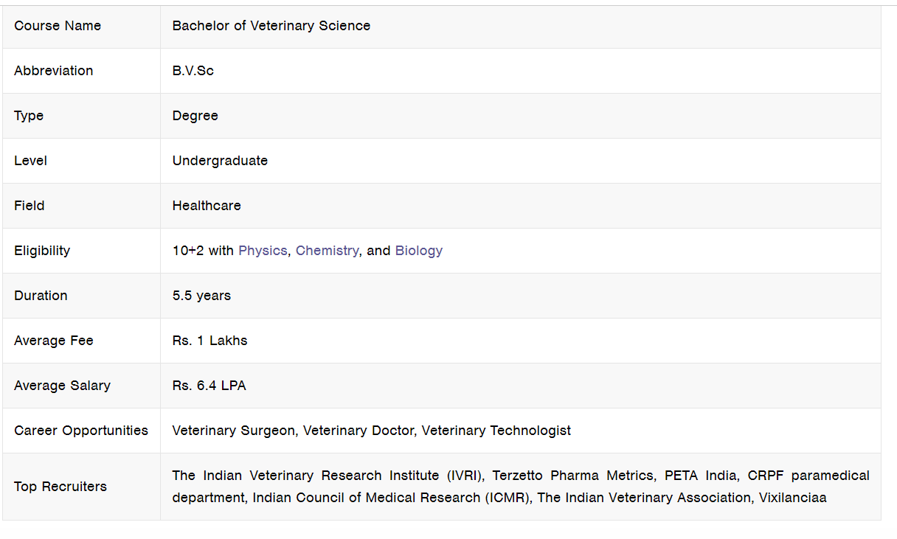

Bachelor of Veterinary Science
Bachelor in Veterinary Science is an undergraduate degree programme which is also known as B.V.Sc, a degree for studies in veterinary medicine. Bachelor of Veterinary Science, BVSC course duration is 5.5 years with a compulsory internship programme. Bachelor of Veterinary Science (B.V.Sc) deals with the study of medical diagnostics, and the treatment of diseases of all animals.
Highlights - BVSC

Careers Opportunities after BVSC
- Veterinary Surgeon
- Veterinary Doctor
- Veterinary Technologist
Bachelor of Technology (Poultry Technology) – BTech (PT) (4 Years)
Bachelor of Technology (Food Technology) – BTech (FT) (4 Years)
Bachelor of Technology (Dairy Technology) – BTech (DT) (4 Years)
Bachelor Of Veterinary Science [BVSc] & A.H.
Bachelor Of Veterinary Science [BVSc] (Animal Nutrition)
Bachelor Of Veterinary Science [BVSc] (Veterinary Pathology)
Bachelor Of Veterinary Science [BVSc] (Animal Genetics & Breedings
Bachelor Of Veterinary Science [B.V.Sc.]
Bachelor Of Veterinary Science [BVSC] (Veterinary Microbiology